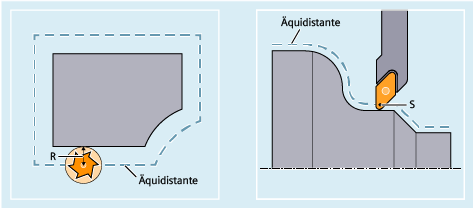

Kontur und Werkzeugbahn sind nicht identisch. Der Fräser- bzw. Schneidenmittelpunkt muss entsprechend des Werkzeugradius auf einer Äquidistanten zur Kontur (Werkzeugmittelpunktsbahn) verfahren werden. Dazu wird von der Steuerung während der Abarbeitung des Programms die programmierte Werkzeugmittelpunktsbahn anhand des Werkzeugradius des aktiven Werkzeugs (Werkzeug-Korrekturspeicher) so verschoben, dass die Werkzeugschneide exakt an der programmierten Kontur verfahren wird.
R | Werkzeugradius |
S | Schneidenmittelpunkt |
Die Werkzeugradiuskorrektur ist ausführlich beschrieben in Kapitel "Werkzeugradiuskorrekturen".
Siehe auch:
Programmierte Kontur und Werkzeugbahn
Werkzeug-Korrekturspeicher